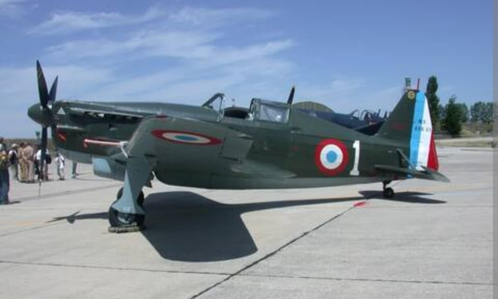

Le Morane-Saulnier MS.410 est une version améliorée du MS.406, destinée à corriger plusieurs faiblesses du modèle original. Plus aérodynamique, mieux armé et doté d’un radiateur redessiné, il devait remplacer progressivement le MS.406 en 1940.
La défaite de juin 1940 stoppe sa production : seuls quelques exemplaires sont terminés, mais ils montrent un réel potentiel et une nette amélioration par rapport au MS.406.

Le MS.410 reprend la cellule du MS.406 mais avec plusieurs améliorations visibles :
Ces modifications donnent au MS.410 une silhouette plus “propre” et plus moderne que celle du MS.406.
Le MS.410 n’a pas eu le temps d’être engagé en nombre. Quelques exemplaires sont testés, certains intégrés dans des unités, mais la production est stoppée par l’armistice.
Page du Musée HOP WW2 – Section chasseurs français